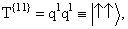

Ассоциируя qα со спиновыми функциями объекта со спином 1/2, причем и являются базисными спинорами с проекциями спина +1/2 и -1/2, соответственно, (это барионы спина 1/2 и кварки, как мы увидим позже), мы можем образовать симметричный тензор с тремя компонентами
 |
(1.38) |
и мы ввели 1/,
чтобы нормировать эту компоненту на 1.
Ассоциируя опять  со спиновыми функциями объекта со спином
1/2, запишем единственную компоненту синглета в виде
со спиновыми функциями объекта со спином
1/2, запишем единственную компоненту синглета в виде
(1.39) |
и мы ввели 1/
для нормировки на единицу.
Для примера образуем произведение спинора qα
и ему сопряженного спинора qβ с
базисными спинорами в виде строк (1 0) и (0 1). Разложение в сумму НП
достигается здесь вычитанием шпура (напомним, что матрицы Паули бесшпуровые)
|
(1.40) |
где  -
бесшпуровый тензор размерности dV =(n2 - 1),
соответствующий векторному представлению группы SU(2) и имеющий для n = 2
размерность 3; I - единичная матрица, соответствующая единичному представлению.
Группа SU(2) так мала, что оба ее НП Т{αβ}
и
-
бесшпуровый тензор размерности dV =(n2 - 1),
соответствующий векторному представлению группы SU(2) и имеющий для n = 2
размерность 3; I - единичная матрица, соответствующая единичному представлению.
Группа SU(2) так мала, что оба ее НП Т{αβ}
и  соответствуют одному и тому же НП размерности 3, тогда как НП
соответствуют одному и тому же НП размерности 3, тогда как НП  соответствует скалярному НП как и . Для
соответствует скалярному НП как и . Для  2
2